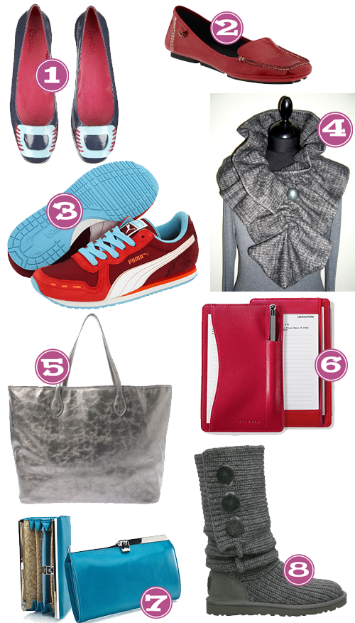
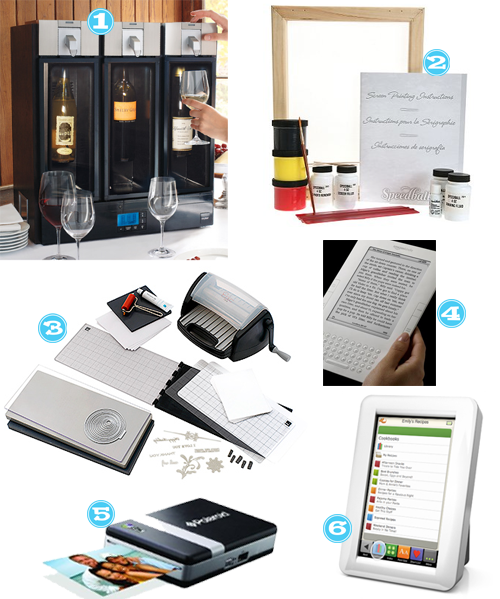

I was on the hunt for some cute christmas tags and I knew Etsy would come through! I came across this CUTE etsy shop: Sparkle & Cheer. These photo gift tags are just CALLING. MY. NAME!! My favs are the mixed set-colorful confections, what are yours?
Get On My Head!
December 10, 2009 by
There are so so many fun and fashionable things to adorn your head and hair with these days! It’s a cheap addition to any outfit for the frugalista in me and it’s an easy way to change up my look daily. It’s a very exciting time for a hair girl like me! Here are a few that I am truly digging right now.

- Forever21, Wild Rose Headwrap
- Forever21, Feather Poof Comb
- Etsy, Tamara Peacock Feather Hairpin-BLUE
- Etsy, Olive Martini Poppy
- Charlotte Russe, Zipper Bow Headband
- Etsy, A Very Sexy Headband
ShopTipsy has some super cute hair options that we tipsy girls love as well here and here.
Christmas Wishlist: AK Edition
December 8, 2009 by
Der thought it’d be a good idea if we all shared our dream Christmas Wishlists for this year–she explicitly said if money was no object what would you ask for. So I picked a little something something or alot of something something. But I categorized it for you foos because I’m OCD like that. Anyway…have at it. I’m drooling.
Shoes & Accessories

- Boden, Patent Buckle Flats-Navy – I love love love this color combo.
- Piperlime, Bernardo Google-Red – I’ve been wanting a driving moc
- Zappos, PUMA Cabana Racer II Wn’s-Hi Risk Red/White/Blue Mist – a vintage tennis shoe mixed with the bomb color combo..could not be more AK
- Dreams Corner Etsy Shop, Scarf ruffle gray in wool italian fabric with vintage button – ohhhh ruffles, yes please
- bossa, Shiraleah Recession collection tote bag-Pewter – I’ve been looking for a metallic purse that’s not to out there…I think this might be it.
- Levenger, Pen Pocket Briefcase with Pen – a cute little notepad to have with me to write down stuff to remember since I can’t remember shit anymore–can you say old?
- Abas, Cate Accordian-Classique Blue – this was on my list last year, turquoise…my favorite color
- UGG, Women’s Classic Cardy-Grey – this was newly added thanks to Court
Jewelry

- Sundance, Pitter-Patter Ring – not sure what it is about this ring, I’m just drawn to it.
- Craftsbury Kids, Custom Silhouette Pendants-Medium – would I ever be able to get a profile shot of my 14 mo to send in for one of these…aren’t they SO cute??
- Sundance, Modern Times Watch-Blue – again, the color combo got me…would be a great occasional watch
- Sleeks Etsy Shop, Silk Necklace-Slate Grey – I love this and am envisioning it sprucing up my tee collections
- Sundance, Champagne Pincushion Ring – I don’t wear gold much but man o man this is a statement ring
- Silver Tribe, Native American Navajo Indian Multicolor Sterling Silver Bead Necklace Jewelry – picture it…a navy tee with this necklace…OMG
- Belartes, Tagua Adjustable Necklace – this one is thanks to O Magazine..aren’t they gorgeous??
Clothing

- Sundance, Jacket Militaire-Ice Blue – I love how this is the perfect shade of bright..right up my alley
- Kate Boggiano, Tank Top-Sparkling Grape – I have a couple of these in neutral colors and would love to brighten up my collection.
- Nordstrom, Velvet by Graham & Spencer “Kylea” Sequin Tank – Sequins are everywhere in stores, have you noticed?
- Chadwicks, Sculptural Cross Neck Babydoll – Love this neckline AND the color
- Target, Merona Elbow Sleeve Turtleneck Top – Newport Aqua – This sleeve length is perfect for Houston weather–its a turtleneck but a shorter sleeve–perfecto
- Victoria’s Secret-Open cardigan tee-Blackberry – COMFY is what comes to mind when I see this..and adorable.
Odds & Ends

- Sur la Table, Copco Round Bag Caps – Chip clips are so 2008
- The Container Store, Drop-Front Shoe Boxes – This would be the beginning of my dream closet
- Amazon, Vacu Vin Glass Markers Party People – Another new edition thanks to Sarah
- happytape, so many pretty solids 20pak – My brown paper bag wrapping would be so happy
- Amazon, Jiffy Steamer ESTEAM Travel Steamers-Pink – a PINK clothing steamer!! SQUEEEEE!
- Bed Bath & Beyond, Amy Butler Bath Towels-One of each please – I couldn’t believe it when I saw these..I would buy all different ones and mix them up because I’m eclectic like that.
Gadgets

- Sur la Table, Skybar Wine System – It’s like WHAT?! are we at the AK casa or a wine bar?!
- Urban Outfitters, Speedball Screenprinting Kit – I would love to learn how to do this
- Paper Source, Letterpress Machine Combo Kit – Again I would love to learn how to do this
- Amazon, Kindle Wireless Reading Device – I would load this sucker up and take it with me wherever I went
- Amazon, Polaroid CZA-10011B PoGo Instant Mobile Printer – Isn’t this the coolest thing?
- The Demy – A recipe gadget, perfect, love it.
Books

- Amazon, Confections of a Closet Master Baker: One Woman’s Sweet Journey from Unhappy Hollywood Executive to Contented Country Baker – About Sandra Bullock’s sister
- Amazon, Kirtsy Takes a Bow: A Celebration of Women’s Online Favorites – The pictures I’ve seen online alone are drawing me to this book
- Amazon, Stay Home, Stay Happy: 10 Secrets to Loving At-Home Motherhood – 10 secrets to anything is intriguing to me
- Amazon, Twilight – Yes, I admit, I might be the last person on Earth that hasn’t read this book or seen the movie..I should start, yes?
- Amazon, Guac Off! – The perfect end to this post–Guac Guac Guac–I have an unhealthy obssession to it, but it’s the good fat right?
So what’s on your wishlist this year?
China, China!
December 7, 2009 by
As I have mentioned before, I am obsessed with all things Asian. So much so that my son Austin (7yrs) will sing ‘China, China’ whenever he sees something that is sure to catch my eye. I have lots of Asian fans, but here are a few variations for the peeps not as crazy OBSESSED in love with anything from the Eastern world as me.
Etsy Spotlight: tinyleaves
December 4, 2009 by

Today’s Etsy Spotlight is on tinyleaves. Tinyleaves is another etsy shop that has infiltrated Tipsy Society either because we’ve purchased from there or we’ve been gifted something from there. Either way–go there! These earrings are perfect for everyday and she has so many different colors that you could be set for life without going broke. Hint Hint, perfect gifts!
What’s even better is that she donates 20% to Memphis MultiNational Ministries, a non-denominational Christian organization which serves the refugee community in Memphis, Tennessee. So even if you are buying for yourself, you are helping someone else! Hmmm which color am I lacking…decisions decisions!
My Glass, your glass, WHOSE GLASS!?!?
December 2, 2009 by
Stop the madness now and invest in some of these awesome glass markers!
- This Wine is Mine, Personalized Wine Markers
- Etsy, Vintage Oija Boards
- Etsy, Custom Wine Charms
- Sur la Table, Wine Lines
- Amazon, Vacu Vin Party People Glass Markers
- Etsy, Winter Wonderland Wine Charmer Gift Set
Go On, Get Your Bake On!
December 1, 2009 by
The month of December usually means full discretion to bake anything you normally wouldn’t throughout the rest of the year. Ordinarily, you would feel bad about just randomly baking some creation at any other time of the year, but if it’s in DECEMBER it’s just commonplace that you are baking because it MUST mean it has something to do with a holiday tradition of some sort, am I right? (say yes)
And if you are like us Tipsy Girls, you want to look GOOD baking! BAKING TIP: throw a little flour on the apron as you are walking the plate of cookies over to your neighbor’s house even if they are slice and bake, they’ll think you’ve been baking for hours just for them!!
- Anthropologie, Big Frills Apron
- Paper Flowers Etsy Shop, Hostess Apron
- Anthropologie, Extra Ingredient Apron
- Cocoa Dreams Etsy Shop, Casey Scroll Apron
- Pier 1, Vintage Printed Halter Apron
- Decorative Instincts Etsy Shop, Grey Polka Dot Apron
- Garnet Hill, Reversible Retro Apron
- Anthropologie, Succulent Apron
- City Girl Aprons Etsy Shop, Autumn Halter Apron
- Anthropologie, Winterfest Apron
- Brassy Apple, Hostess Mod Bloom
- City Girl Aprons Etsy Shop, XMas Trees Apron
- Annies Attic Etsy Shop, Santa Baby Apron
Get Them Holiday Cards Ready!
November 30, 2009 by

So every year I TRY to get Christmas cards out. I have them in mind, I know where the addresses are but sometimes these things just slip through the cracks. It happens. If I had all the supplies I needed–which photograph I want to use for the card itself, the postage, self adhesive envelopes…I mean GAH I want it to go assembly line quick! Not that I don’t want everyone to think that I lovingly put all these beautiful cards together yada yada yada…. Here’s one thing that would make things a ton easier: a return address stamp, preferably self inking! Here are my favs out there:
- Emililies Etsy Shop, Self Inking (abby style)
- Emililies Etsy Shop, Self Inking (holly style)
- Polka Dot Design, Plain Jane and Gregory Stamp
- Polka Dot Design, Ogee Stamp
- Relish Design Studio Etsy Shop, Personalized Address Stamp-104
Etsy Spotlight: ShopTipsy
November 20, 2009 by
Sooooo we weren’t really planning on doing this sort of thing, but we had many many requests via The Working Closet Flickr Pool. So we thought what the heck. Why not. The original idea came from the want for J. Crew ruffleness or flowers and life getting in the way. So we thought, why couldn’t we make something like that? We’re crafty! And then the CrafTEE was born and a tutorial was requested. After the tutorial, some people asked for an Etsy shop because they weren’t crafty. And so ShopTipsy was born in the hopes of making the world a better place, one ruffle and one flower at a time.
So today is your lucky day, today we are giving away one Ruffle Tee from our shop!!
CONTEST ALERT! A GIVEAWAY!!
How to Enter
To enter the giveaway, just answer the following question in the Comments section of this post. Because we are a Tipsy crew:
“What t-shirt will you never get rid of and why?”The Rules
One entry per person. No entries after 12:00 am Central Time Wednesday. Winners will be randomly selected from among entrants. Winners will be announced at 9:00 am Central Time Wednesday.
La Virgen de Guadalupe (that means THE Virgen de Guadalupe)
November 17, 2009 by

That’s my husband’s favorite joke…”Do you know what La Cocina means?…THE Cocina”…followed by much laughter. Hey, his joke not mine. So I couldn’t resist when writing up this post.
If you live in Texas, the Virgin of Guadalupe is probably a sight you’ve seen many times. I’m not Catholic but I love the colors and stars and everything about the image. My aunt has these boots and they are AMAZING and I may or may not need to steal them from her closet.
- Rocketbuster, Virgin Guadalupe Black
- Crows Nest Trading Co, Your Heart Is Free Ring by Sweet Bird Studio
- James Avery, Virgin of Guadalupe Charm
- Stinky Monkey 4 Eva Etsy Shop, La Virgin de Guadalupe Apron
- Junk Gypsy, Turquoise Guadalupe Cuff


{kind=link}
Recent Comments